レベルデザイン基礎 演習 H03
第3回：アフォーダンスとシグニファイア
2026-11-05
本日の配布物
H03_Affordance.unitypackage（作例 Ex01〜Ex08 の完成シーンと、ClickReaction.cs・MissTarget.cs・ContrastReadout.cs の 3 つのスクリプト）
前回までの DesignPrinciples2026 プロジェクトをそのまま使います。メニューバーの Assets → Import Package → Custom Package... でこのファイルを選び、Import を押すと Assets/Lessons/H03_Affordance/ に入ります。
今日は、ボタンが「押せそう」に見える仕組みを、Unity の標準の Button を使って手で確かめます。手がかりを 1 つずつ消したボタンを押し比べ、押せそうで押せない飾りや、押せるのに押せそうに見えないボタンを作ってから、状態の色と明るさの比で直していきます。
同じ日の講義（原理編 第3章「アフォーダンスとシグニファイア」）で聞いた話を、ここでは自分の手で再現します。章は、これまでと同じく三つの層の順に並べています。
0. はじめに：三つの層と、今日の問い
講義 D01（原理編 第1章）では、ゲームのデザインが扱う範囲を三つの層に分けました。
- 体験の層：操作したときの手応えや迷いにくさ
- 情報の層：何を、どんな順番で、どれくらいの強さで見せるか
- 見た目の層：色、形、レイアウト、フォント
前回の H02 では、三つの層を載せる土台（画面）を整えました。今日はその上に置くボタンそのものを扱います。問いは 1 つで、「押せることを、どう伝えるか」です。
この問いには、2 つの言葉が役に立ちます。アフォーダンス（affordance）は、モノが「どんな行為を可能にするか」という関係のことです。画面でいえば、クリックすると反応する、というボタンの「できること」がアフォーダンスにあたります。
シグニファイア（signifier）は、その「できること」を伝える手がかりです。ボタンの立体感や影、乗せたときの色の変化、「次へ」のような文言がそうです。アフォーダンスが「できること」、シグニファイアが「できると分かること」と捉えると、この先の話が整理しやすくなります。
この演習では、手がかりが欠けたときに各層で何が起きるかを順に見ていきます。体験の層では押せるのに見落とされ、情報の層では押したかどうかが分からず、見た目の層ではボタンが背景に沈みます。
配布シーンの Ex 番号は Unity で作業しやすい順に付けています。このページは層の順に並べているので、番号が飛ぶところがあります。前提の状態をどのシーンで用意するかは、作例ごとに書いています。
1. 準備：ボタンを置き、Transition を読む
層の話に入る前に、標準のボタンを 1 つ置き、見た目の変わり方を決めている欄を読んでおきます。今日の作例は、すべてこの欄の値を変えて進めます。
ボタンを置いて Transition 欄を読む
Assets/Lessons/H03_Affordance/Scenes/Ex01_ButtonTransition.unity
メニューからボタンを作って大きさを 240 x 88 にすると、Game ビューの真ん中に白い「Button」が表示されます。
使うもの
- Button - TextMeshPro：押せるボタンです。土台の Canvas と、入力を振り分ける EventSystem も一緒に作られます
- Button コンポーネント：押されたときの処理と、状態ごとの見た目の変え方を持っています
- トランジション（Transition）：ボタンの状態が変わったときに、見た目をどう変えるかの方式です
手順
- 試し用のシーン（前回までの SampleScene など）を開きます
- Hierarchy ウィンドウの何もないところを右クリックします
- UI (Canvas) → Button - TextMeshPro をクリックします
- 作られた Button が選ばれた状態で、Inspector の Rect Transform の Width に
240、Height に88を入力します（入力したら Enter） - Inspector を下へスクロールし、Button コンポーネントの見出しの左にある三角をクリックして開きます
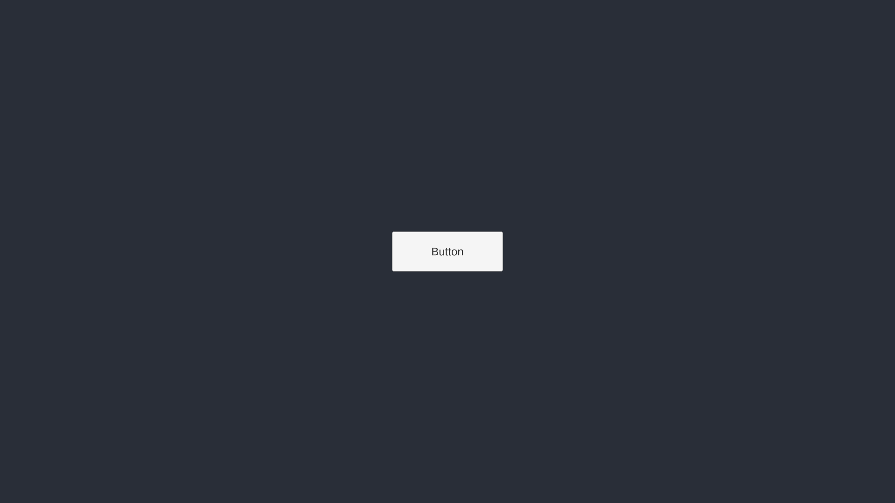
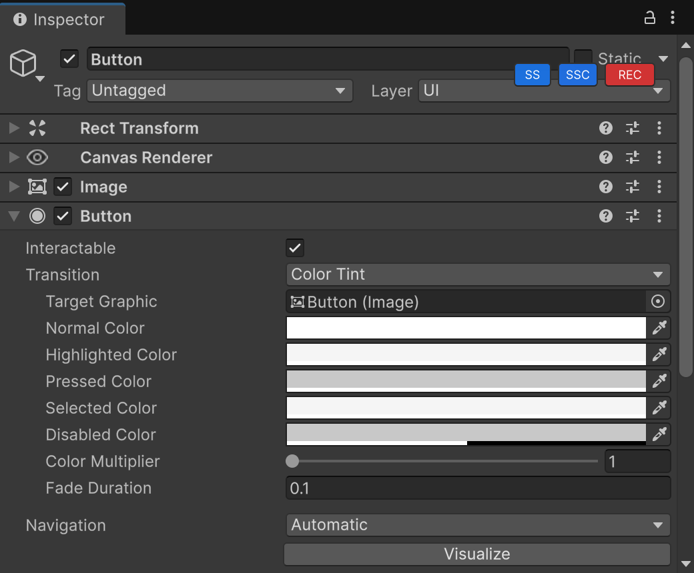
| 欄 | 意味 | 作った直後の値 |
|---|---|---|
| Interactable | いま押せるかどうかです。外すと Disabled（押せない）の状態になります | オン |
| Transition | 状態が変わったときの見た目の変え方です。Color Tint は色を掛けて変えます | Color Tint |
| Target Graphic | 色を変える対象です。ボタンの板（Image）が入っています | Button (Image) |
| Normal Color | 何もしていないときの色です | 255, 255, 255（白） |
| Highlighted Color | マウスのカーソルが乗っているときの色です | 245, 245, 245 |
| Pressed Color | 押している最中の色です | 200, 200, 200 |
| Selected Color | キーボードやパッドで選ばれているときの色です | 245, 245, 245 |
| Disabled Color | Interactable が外れているときの色です | 200, 200, 200（不透明度 128） |
| Color Multiplier | 上の色にさらに掛ける倍率です（1〜5） | 1 |
| Fade Duration | 色が切り替わるまでの秒数です | 0.1 |
| Navigation | 矢印キーやパッドで、次にどのボタンへ移るかの決め方です | Automatic |
確認：Button コンポーネントの Transition が Color Tint になっていて、その下に Normal Color から Disabled Color までの 5 つの色が並んでいることを確認します。
初期値のままでは、乗せてもほとんど変わらない理由
色は 0〜255 の数で表され、白い板に 245 の灰色を掛けると、ほんの少しだけ暗くなります。原理編の第3章では、この初期値を明るさの比で測っていて、Normal と Highlighted の比は 1.09:1、Normal と Pressed の比は 1.67:1 でした。比が 1:1 に近いほど、2 つの色は見分けにくくなります。
つまり初期値のままでは、マウスを乗せても色はほとんど変わりません。このページの 3 章（情報の層）で、この値を自分で決め直します。
2. 体験の層：押せそうに見えるか
この層で守るのは、押せるものが押せそうに見え、押せないものが押せなさそうに見えることです。押せるボタンの前を素通りされたり、ただの飾りを何度もクリックされたりする場面は、どちらも体験の層が壊れた状態です。
この章では、まず手がかりを 1 つずつ消したボタンを押し比べます。次に、見た目と中身が食い違う 2 つの例を作り、最後に「いまは押せない」を見せる Disabled の状態を確かめます。
手がかりを 1 つずつ消した 4 つのボタン
Assets/Lessons/H03_Affordance/Scenes/Ex02_FourCues.unity
前の作例のボタンに、形（角丸と影）・色・文言の 3 つの手がかりを持たせたものが左端の ALL CUES です。残りの 3 つは、そこから手がかりを 1 つだけ消しています。4 つとも押すと下の Clicked が増え、どれも同じように押せることが分かります。
使うもの
- ALL CUES：青い塗り、角丸と影、「NEXT >」の文言がそろったボタンです
- NO TEXT / NO COLOR / NO SHAPE：それぞれ文言・色・形（角丸と影）だけを消したボタンです
- ClickReaction.cs：ボタンが押された回数（Clicked）と、空振りの回数（Missed）を数えて表示するスクリプトです
手順
- Project ウィンドウで
Assets/Lessons/H03_Affordance/Scenes/Ex02_FourCuesをダブルクリックして開きます - Play ボタン（Cmd + P、Windows は Ctrl + P）を押します
- Game ビューで、4 つのボタンを左から順に 1 回ずつクリックします
- 確かめたら、もう一度 Play ボタンを押して止めます
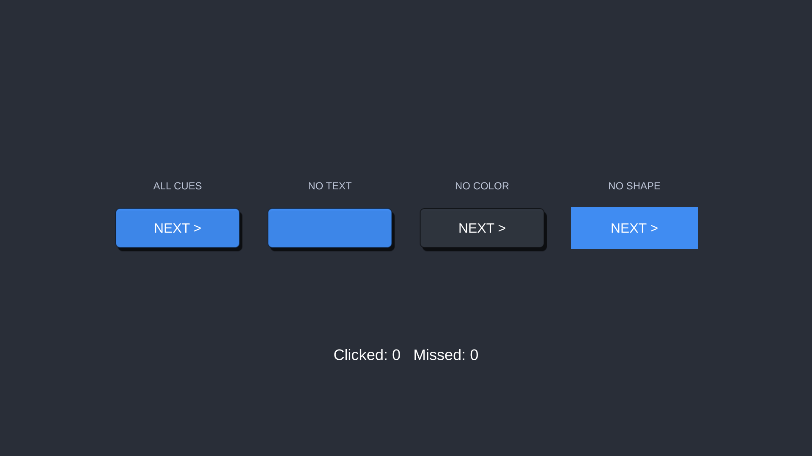
確認：4 つのボタンを押すたびに Clicked が 1 ずつ増え、最後に「Clicked: 4」になることを確認します。そのうえで、初めてこの画面を見た人が押しそびれそうなのはどれかを考えてみます。
押せるのに押されにくいボタン
4 つとも機能は同じなので、アフォーダンスは 4 つとも持っています。違うのはシグニファイアの数だけです。人は形・色・文言といった手がかりを足し合わせて「これはボタンだ」と判断しているので、1 つ欠けるごとにボタンらしさは弱くなります。
いちばん差が大きいのは NO COLOR です。色を明るさの比で測ると、ALL CUES の青と背景の比は 4.07:1 ですが、NO COLOR の塗りと背景の比は 1.12:1 しかありません。押せるのに背景に溶けていて、素通りされやすいボタンになっています。
機能はあるのに気づかれない、という失敗の多くはこの手がかりの不足から起きるので、機能を作り直す前に手がかりを足すと直ることがよくあります。
ボタンに見える飾りと、文字に見えるボタン
Assets/Lessons/H03_Affordance/Scenes/Ex03_FalseHidden.unity
前の作例の ALL CUES と同じ見た目の板から、Button だけを取り除いたものを左に置きました。右には、板を透明にして文字だけにしたボタンを置いています。左を押すと Missed（空振り）が増え、右を押すと Clicked が増えます。
使うもの
- Deco_LooksLikeButton：ボタンに見えるけれど Button を持たない飾りの板です
- Button_LooksLikeText：板の色を透明（アルファ 0）にした、文字だけに見えるボタンです
- MissTarget.cs：飾りがクリックされたら、空振りとして ClickReaction に数えさせるスクリプトです
手順
- Project ウィンドウで
Ex03_FalseHiddenをダブルクリックして開きます - Play ボタン（Cmd + P、Windows は Ctrl + P）を押します
- 左の「NEXT >」を 3 回クリックします
- 右の「Continue」を 1 回クリックします
- Play を止め、Hierarchy で
Deco_LooksLikeButtonをクリックして Inspector を見ます
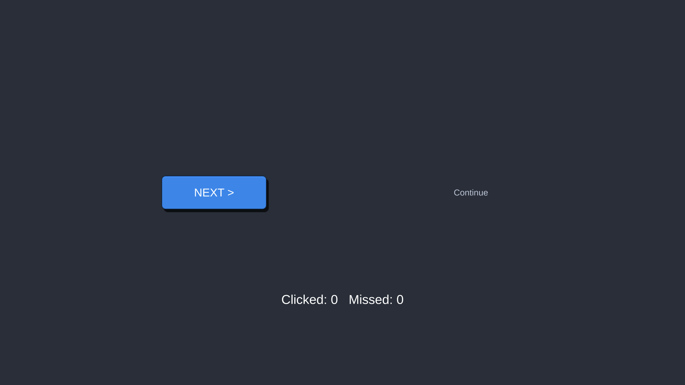
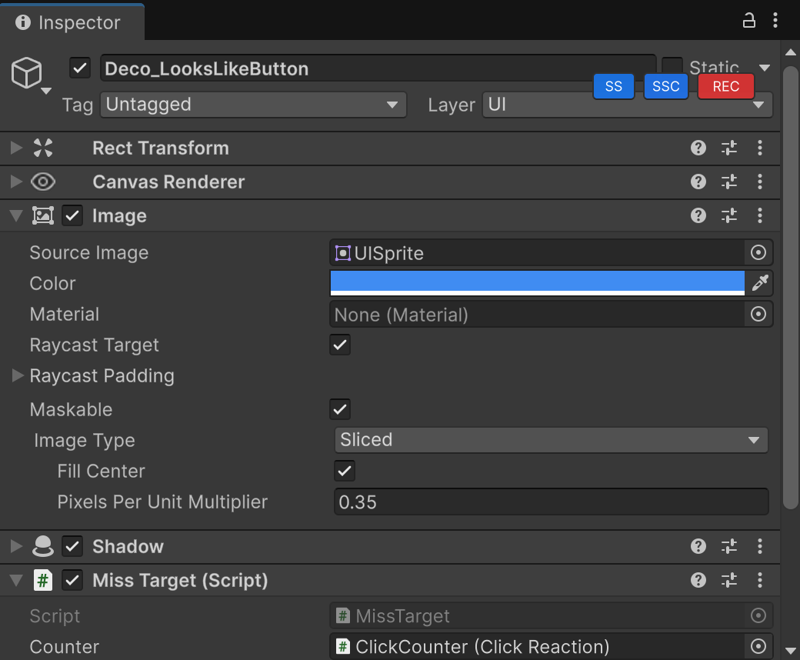
確認：左を 3 回押すと「Missed: 3」、右を 1 回押すと「Clicked: 1」になることを確認します。飾りの Inspector に Button が無く、Raycast Target にチェックが入っていることも見ておきます。
四つの組み合わせ
HCI（人とコンピュータの関わりを研究する分野）の研究者ウィリアム・ゲイバー（William Gaver）は、1991 年の論文で「実際にできるか」と「できると示す手がかりがあるか」を縦横に取り、四つの組み合わせを示しました。今日の作例を当てはめると、次のようになります。
| 名前 | できるか | 手がかり | 今日の作例 | 起きること |
|---|---|---|---|---|
| 知覚できるアフォーダンス（perceptible affordance） | できる | ある | Ex02 の ALL CUES | 迷わず押せる |
| 隠れたアフォーダンス（hidden affordance） | できる | ない | Ex03 右の Continue、Ex02 の NO COLOR | 素通りされる |
| 偽のアフォーダンス（false affordance） | できない | ある | Ex03 左の飾り | 押して裏切られる |
| 正しい拒否（correct rejection） | できない | ない | 背景、ボタンの上の見出し | 誰も押そうとしない |
目指すのは知覚できるアフォーダンスです。ゲイバーは、隠れたアフォーダンスと偽のアフォーダンスが誤りを生むと書いています。偽の手がかりで空振りが重なると、プレイヤーは画面の手がかりを信用しなくなり、本物のボタンまで押されにくくなります。
飾りがクリックを受け取れるのは、Image の Raycast Target がオンだからです。MissTarget.cs はこの性質を使って空振りを数えています。Button を持たない飾りでも、Raycast Target がオンのままだと「クリックが届く板」になる点は覚えておくと便利です。
Interactable を外して Disabled にする
Assets/Lessons/H03_Affordance/Scenes/Ex04_Disabled.unity
Ex02 の ALL CUES と同じボタンを 2 つ並べ、右だけ Interactable のチェックを外しています。右のボタンは暗くなり、押しても反応しなくなります。
使うもの
- Interactable：ボタンがいま押せるかどうかを決めるチェックです
- Disabled Color：Interactable が外れているときに、Target Graphic に掛ける色です
手順
- Project ウィンドウで
Ex04_Disabledをダブルクリックして開きます - Hierarchy で
Button_InteractableOffをクリックします - Inspector の Button で、Interactable のチェックが外れていることを確かめます。チェックを入れたり外したりして、Game ビューのボタンの色の変化を見比べます（最後は外した状態に戻します）
- Play ボタン（Cmd + P、Windows は Ctrl + P）を押し、左右のボタンにカーソルを乗せたりクリックしたりして、反応を比べます。確かめたら Play を止めます
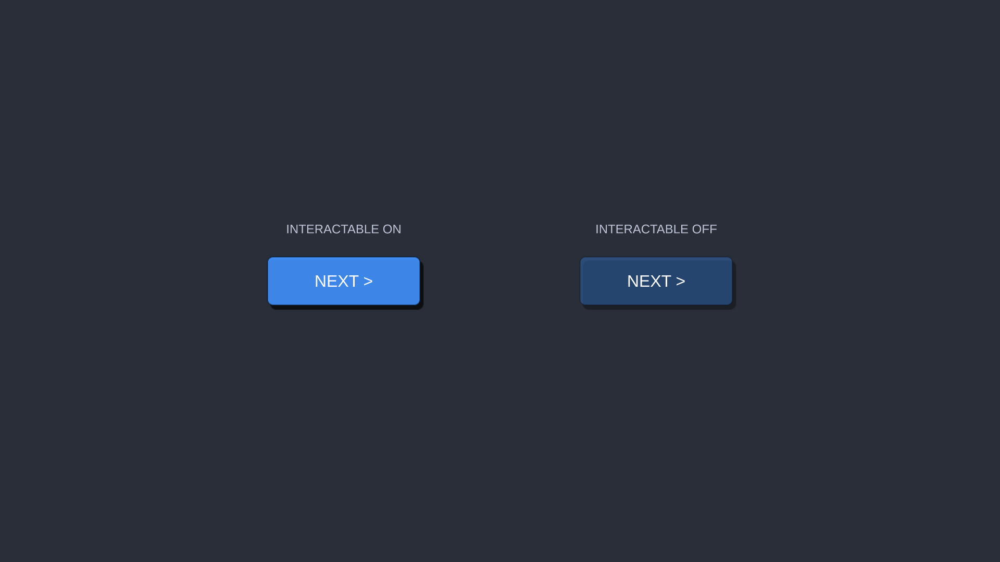
確認：Interactable を外すと板が暗くなり、Play 中に乗せても押しても色が変わらないことを確認します。そのうえで、文字が明るいまま残っていることにも注目します。
「いまは押せない」を正しく見せるには
Disabled Color は Target Graphic、つまり板の Image にしか掛かりません。文字は板の子にある別の部品なので、初期値のままでは白く明るいまま残ります。板は暗いのに文字はくっきりしているので、遠目には「押せそう」な顔が少し残ってしまいます。
押せないボタンは、四つの組み合わせでいう正しい拒否の側に寄せたいところです。原理編の第3章では、Disabled の見た目の定石を「彩度を落として薄く、影を消す」としています。文字の色も薄くし、影を消すと、板だけでなくボタン全体が「いまは押せない」と伝えるようになります。
3. 情報の層：押したことが伝わるか
この層で守るのは、ボタンの状態が変わったことがプレイヤーに伝わることです。カーソルを乗せても色が変わらない、押したのか押せていないのか分からない、パッドでいまどれが選ばれているのか分からない、という場面では、押せても情報が届いていません。
この章では、Color Tint の色を決め直して状態の違いを見えるようにし、続けてキーボードで操作したときの Selected の印を確かめます。
Color Tint の色を決め直す
Assets/Lessons/H03_Affordance/Scenes/Ex05_ColorTint.unity
Ex02 の ALL CUES と同じボタンを 1 つ置き、Color Tint の色だけを変えます。乗せると少し明るく、押すとはっきり暗くなります。
使うもの
- Normal / Highlighted / Pressed / Selected Color：状態ごとに板へ掛ける色です
- Color ウィンドウ：色の欄をクリックすると開く画面です。Hexadecimal の欄に 16 進数で色を入力できます
手順
- Project ウィンドウで
Ex05_ColorTintをダブルクリックして開きます（配布シーンは手順を終えた状態です。自分で試すときは、Ex02 の ALL CUES を選んで同じ操作をします） - Hierarchy で
Button_ColorTintをクリックします - Inspector の Button で、Normal Color の色の帯をクリックし、開いた Color ウィンドウの Hexadecimal に
DCDCDC（220, 220, 220）を入力して Enter を押します - 同じように、Highlighted Color に
FFFFFF（255）、Pressed Color に969696（150）、Selected Color にDCDCDC（220）を入力します - Play ボタン（Cmd + P、Windows は Ctrl + P）を押し、ボタンにカーソルを乗せたり、押したままにしたりします。確かめたら Play を止めます
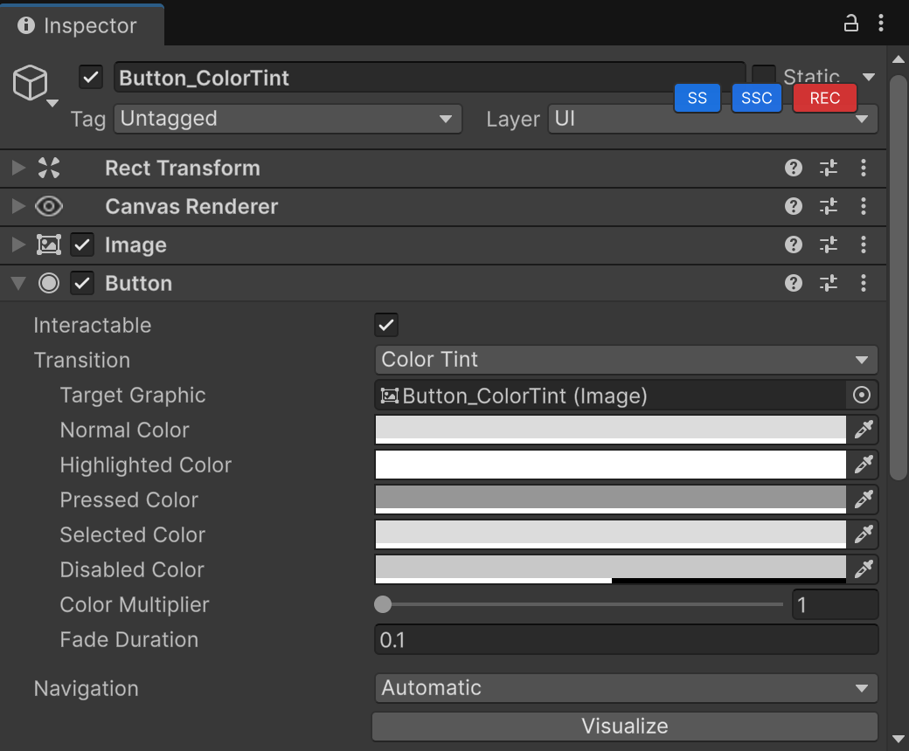
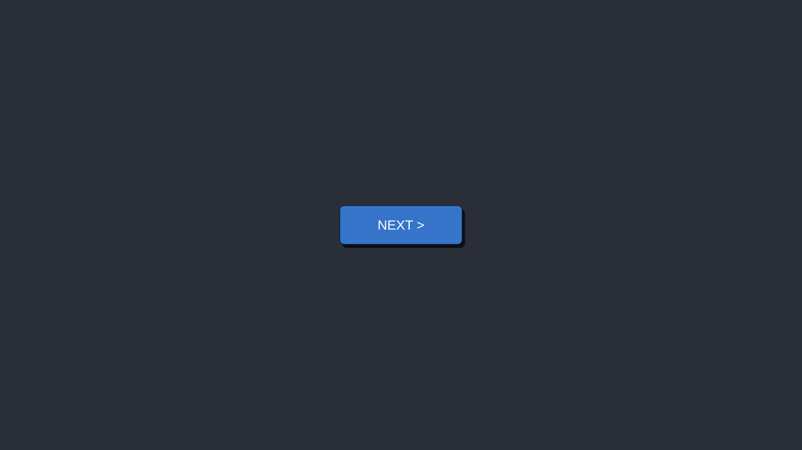
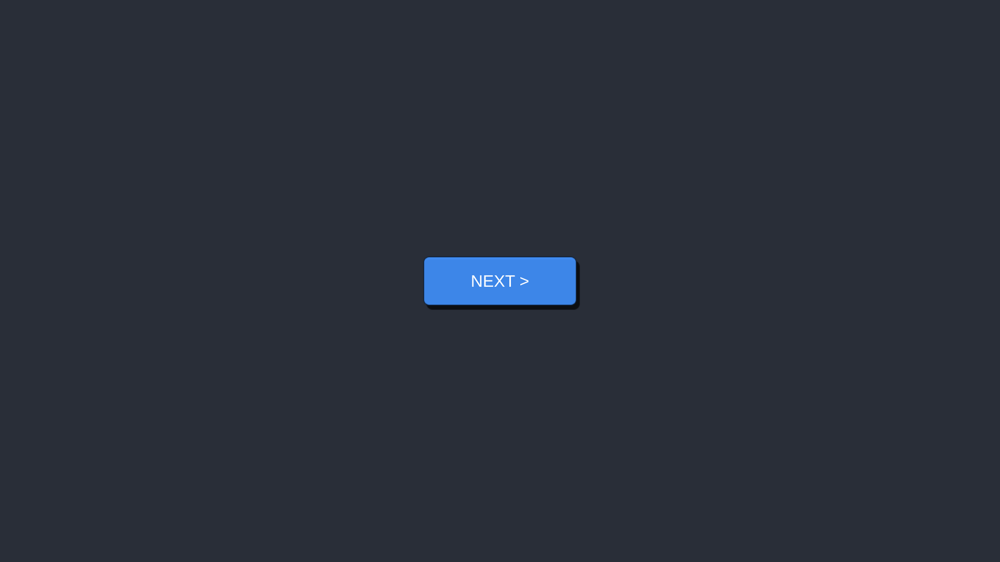
3 枚とも、Game ビューの中央にあるボタンのあたりを拡大して並べています。
確認：Play 中、カーソルを乗せるとボタンが少し明るくなり、押している間ははっきり暗くなることを確認します。
Normal を 220 に下げる理由
Color Tint は、板の Image の色に状態の色を掛け算します。Color Multiplier が 1 のとき、掛ける色の上限は白（255）なので、Image の色より明るくはできません。
初期値のように Normal が 255 だと、Highlighted で明るくする余地が残っていないわけです。そこで Normal を 220 に下げ、Highlighted を 255 にして、乗せたときに明るくなる幅を作りました。
| 状態 | 初期値 | この作例 | 伝えること |
|---|---|---|---|
| Normal | 255 | 220 | 押せる |
| Highlighted | 245（Normal より暗い） | 255（少し明るく） | いま乗っている |
| Pressed | 200 | 150（はっきり暗く） | いま押している |
| Selected | 245 | 220（Normal と同じ） | キーやパッドで選ばれている |
このボタンの青で明るさの比を測ると、Normal と Highlighted は 1.30:1、Normal と Pressed は 1.79:1 になりました。初期値の白いボタンでは 1.09:1 と 1.67:1 だったので、乗せたときの変化がはっきり大きくなっています。Pressed で暗くするのは、現実のボタンが押されると沈むからです。
ただし、ホバー（カーソルを乗せた状態）があるのはマウスだけです。パッドにはカーソルが無く、タッチは指が触れた瞬間がもう押した状態です。ホバーで初めて押せると分かるボタンは、パッドやタッチでは隠れたアフォーダンスになってしまうので、手がかりの本体は Normal の見た目に持たせ、ホバーは確認の役と考えると安全です。
矢印キーで Selected が移る
Assets/Lessons/H03_Affordance/Scenes/Ex06_SelectedFocus.unity
前の作例では、Selected Color を Normal と同じにしました。今度は Selected Color を黄色にしたボタンを縦に 3 つ並べます。Play して矢印キーを押すと、黄色の印が START・OPTIONS・QUIT の間を移ります。
使うもの
- フォーカス（focus）：キーボードやパッドで、いま選ばれている 1 つのことです。Button では Selected の状態になります
- Navigation：矢印キーで次にどのボタンへ移るかの決め方です。Vertical にすると上下だけで移ります
- EventSystem の First Selected：Play を始めたときに、最初に選ばれているボタンです
手順
- Project ウィンドウで
Ex06_SelectedFocusをダブルクリックして開きます（配布シーンは手順を終えた状態です） - Hierarchy で
Button_STARTをクリックし、Inspector の Button で Selected Color の帯をクリックして、Hexadecimal にFFD23C（黄色）を入力します - 同じ Button の Navigation のドロップダウンをクリックし、Vertical を選びます
Button_OPTIONSとButton_QUITにも、手順 2 と 3 を同じように行います- Hierarchy で
EventSystemをクリックし、Inspector の Event System にある First Selected の欄へ、Hierarchy のButton_STARTをドラッグします - Play ボタン（Cmd + P、Windows は Ctrl + P）を押し、マウスには触らずに ↓ と ↑ を押します（Game ビューの何もないところをクリックすると、選ばれていたボタンが外れます）
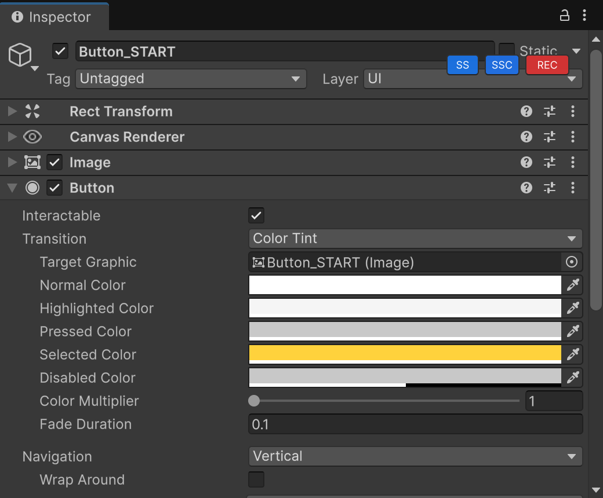
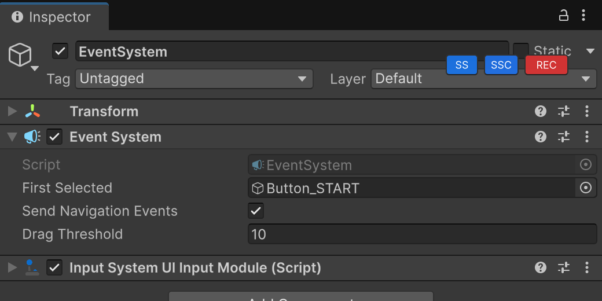
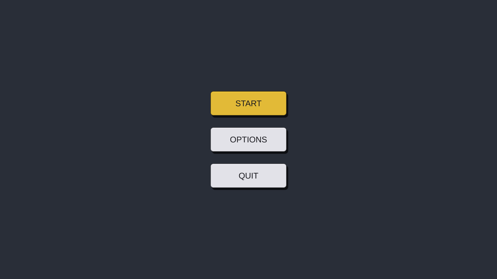
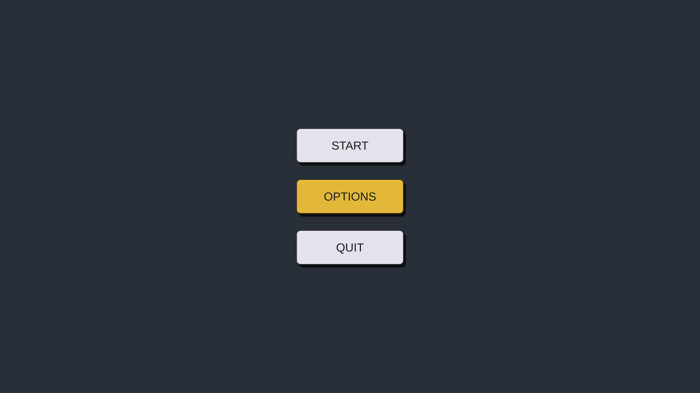
確認：Play を始めた時点で START が黄色になっていて、↓ と ↑ で黄色が上下に移ることを確認します。続けて OPTIONS をマウスでクリックし、カーソルを外しても OPTIONS が黄色のまま残ることも見ておきます。確かめたら Play を止めます。
クリックしたボタンの色が戻らない理由
Button は、マウスで押されたときにも自分を「選ばれたボタン」として EventSystem に登録します。そのため、クリックした後のボタンは Selected の状態のまま残り、ほかのボタンが選ばれるまで Selected Color で表示され続けます。マウスで遊ぶ人から見ると「押したのに色が戻らない」と感じる原因はここにあります。
前の作例で Selected Color を Normal と同じ 220 にしたのは、この残り方を目立たせないためでした。
一方、パッドやキーボードで遊ぶゲームでは、Selected がいま選ばれている唯一の手がかりです。メニューを開いた瞬間にどれか 1 つがはっきり選ばれている状態にしておくと、プレイヤーは最初の 1 回目から迷わずに済みます。原理編では、Selected の印は色だけでなく枠線や光など、色以外でも分かるものにすると読み違えが減るとしています。
4. 見た目の層：背景から浮いて見えるか
この層で守るのは、ボタンが背景からはっきり浮いて見えることです。形も文言もそろっているのに、塗りが背景に近い色で沈んでいる、という場面では、ボタンらしさを支える色の手がかりが効いていません。
この章では、ボタンと背景の明るさの比を数字で表示し、目安を超えるまで色を調整します。
明るさの比を測って 3:1 を超える
Assets/Lessons/H03_Affordance/Scenes/Ex07_ContrastRatio.unity
ここまでの作例は、すべて暗い背景の上にボタンを置いていました。今度は明るい灰色のカードの上に、カードに近い色の BUY ボタンを置き、ボタンの Color だけを変えます。カードの下には、2 つの色の比と目安を満たしているかが表示されます。
使うもの
- コントラスト比（contrast ratio）：2 つの色の明るさの差を、1:1（同じ）から 21:1（白と黒）までの比で表したものです
- ContrastReadout.cs：2 つの部品の色からコントラスト比を計算し、目安との比較を OK / NG で表示するスクリプトです
- Vertex Color：TextMeshPro の文字の色を決める欄です
手順
- Project ウィンドウで
Ex07_ContrastRatioをダブルクリックして開きます。カードの下に赤い文字で「1.38:1 (target 3:1) NG」と表示されています - Hierarchy で
Cardの左の三角を開き、Button_Buyをクリックします - Inspector の Image で Color の帯をクリックし、開いた Color ウィンドウの Hexadecimal に
3359A6（濃い青）を入力して Enter を押します - カードの下の表示が緑の「OK」に変わったことを確かめます
- Hierarchy で
Button_Buyの左の三角を開き、子のText (TMP)をクリックします - Inspector の TextMeshPro - Text (UI) で Vertex Color の帯をクリックし、Hexadecimal に
FFFFFF（白）を入力します
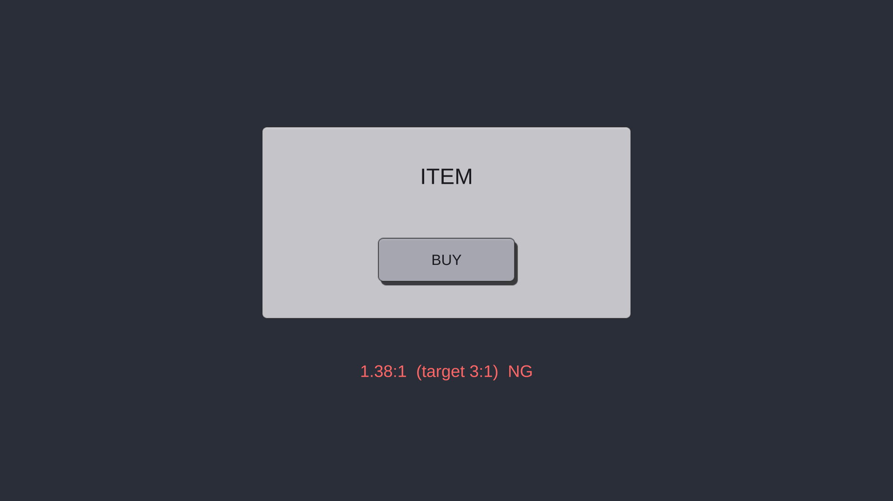
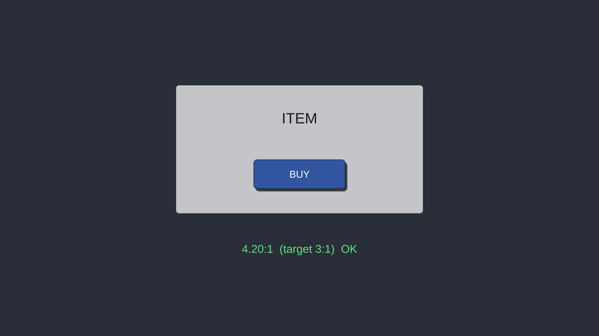
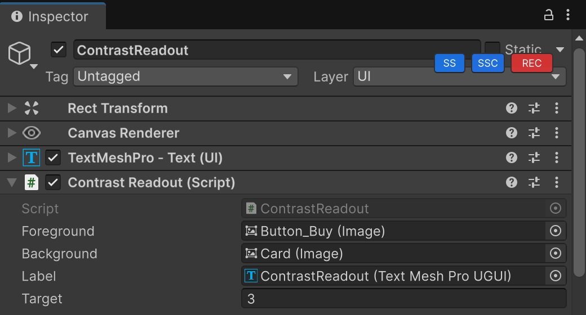
確認：ボタンの色を変えると、Play しなくても表示が「NG」から「OK」に変わり、比が 3 を超えることを確認します。最後に BUY の文字が白になっていることも確かめます。
動画では Color を R 0.20、G 0.35、B 0.65（0〜1 の値）にしていて、比は 4.20:1 です。手順の 3359A6 はこの色を 0〜255 に丸めたもので、表示は 4.21:1 になります。
3:1 と 4.5:1 という目安
Web のアクセシビリティ（誰でも使えること）の指針 WCAG 2.2 は、ボタンの輪郭のような UI 部品には隣り合う色との比で 3:1 以上を、文字には背景との比で 4.5:1 以上を求めています。ゲームに守る義務はありませんが、「押せそうに見えるか」を測る物差しとして使えます。
| 比べたもの | コントラスト比 | 目安との比較 |
|---|---|---|
| 灰色のボタンとカード（変更前） | 1.38:1 | UI 部品の 3:1 に届かない |
| 濃い青のボタンとカード（変更後） | 4.20:1 | 3:1 を超える |
| 濃い色の文字と濃い青のボタン | 約 2.6:1 | 文字の 4.5:1 に届かない |
| 白い文字と濃い青のボタン | 約 6.7:1 | 4.5:1 を超える |
ボタンを濃くすると、今度はボタンの上の文字が読みにくくなります。最初の暗い文字は、灰色のボタンの上では十分に読めましたが、濃い青の上では比が約 2.6:1 まで下がります。ボタンの色を変えたら文字の色も見直す、という順番で考えると、背景・ボタン・文字の 3 段がそろって見やすくなります。
ContrastReadout.cs の全文です。配布物に入っているので書き写す必要はありませんが、要所の意味を読んでおきましょう。
using TMPro;
using UnityEngine;
using UnityEngine.UI;
/// 2 つの Graphic（ボタンとその背景）の色からコントラスト比を計算し、TMP_Text に表示する。
/// 式は WCAG 2.2 の相対輝度（sRGB をリニア化して 0.2126R + 0.7152G + 0.0722B）。
/// Graphic.color の RGB だけを使う。アルファは背景に合成しない（両方とも不透明である前提）。
/// [ExecuteAlways] なので、Play しなくても Inspector で色を変えるとすぐに表示が変わる。
[ExecuteAlways]
public class ContrastReadout : MonoBehaviour
{
public Graphic foreground; // 前景（例: ボタンの Image）
public Graphic background; // 背景（例: ボタンが乗っているカードの Image）
public TMP_Text label; // 結果を表示するテキスト
public float target = 3f; // 目安（WCAG 2.2 の UI 部品は 3:1 以上）
static readonly Color OkColor = new Color(0.35f, 0.90f, 0.50f);
static readonly Color NgColor = new Color(1.00f, 0.40f, 0.40f);
/// 最後に計算したコントラスト比（1〜21）
public float Ratio { get; private set; }
void OnValidate() { Refresh(); }
void Update() { Refresh(); }
public void Refresh()
{
if (foreground == null || background == null || label == null)
return;
Ratio = ContrastRatio(foreground.color, background.color);
bool ok = Ratio >= target;
label.text = $"{Ratio:0.00}:1 (target {target:0.#}:1) {(ok ? "OK" : "NG")}";
label.color = ok ? OkColor : NgColor;
}
/// WCAG のコントラスト比 =（明るい方の輝度 + 0.05）÷（暗い方の輝度 + 0.05）
public static float ContrastRatio(Color a, Color b)
{
float la = RelativeLuminance(a);
float lb = RelativeLuminance(b);
float lighter = Mathf.Max(la, lb);
float darker = Mathf.Min(la, lb);
return (lighter + 0.05f) / (darker + 0.05f);
}
static float RelativeLuminance(Color c)
{
return 0.2126f * Linearize(c.r) + 0.7152f * Linearize(c.g) + 0.0722f * Linearize(c.b);
}
// Inspector の色（sRGB の 0〜1）を光の量に比例する値へ戻す
static float Linearize(float channel)
{
return channel <= 0.03928f ? channel / 12.92f : Mathf.Pow((channel + 0.055f) / 1.055f, 2.4f);
}
}| 部分 | していること |
|---|---|
[ExecuteAlways] | Play していないときも Update を動かします。Inspector で色を変えた瞬間に表示が変わるのはこのためです |
public Graphic foreground; / background; | 比べる 2 つの部品です。Image も TextMeshPro も Graphic の仲間なので、どちらも入れられます |
public float target = 3f; | OK と NG を分ける目安です。文字を測るときは 4.5 にします |
void OnValidate() { Refresh(); } | Inspector で値が変わったときに計算し直します |
Ratio = ContrastRatio(...) | 2 つの部品の Color から比を計算します。アルファ（透明度）は使わないので、不透明な部品どうしで測ります |
label.text = $"..." | 「4.20:1 (target 3:1) OK」の形で表示し、OK なら緑、NG なら赤の文字にします |
ContrastRatio | 明るい方と暗い方の輝度にそれぞれ 0.05 を足して割ります。白と黒なら (1 + 0.05) ÷ (0 + 0.05) = 21 で、最大の 21:1 になります |
RelativeLuminance | 人の目の感じ方に合わせて、緑を最も重く（0.7152）、青を最も軽く（0.0722）足し合わせます |
Linearize | Inspector の 0〜1 の値は見た目に合わせて圧縮されているので、光の量に比例する値へ戻してから足し合わせます |
やってみよう：ショップ画面の手がかりを数える
Assets/Lessons/H03_Affordance/Scenes/Ex08_Example.unity
ショップ画面の一例です。押せる部品と押せない部品を、手がかりの 5 つの観点でそれぞれ作り分けています。
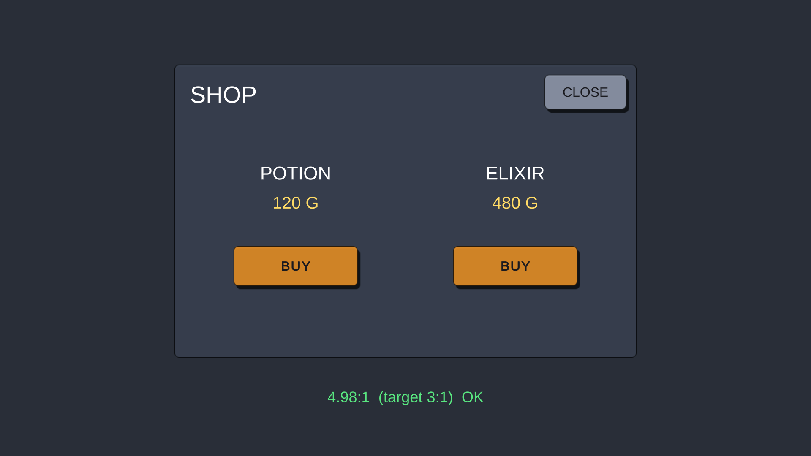
| 観点 | この例での作り方 |
|---|---|
| 形 | BUY と CLOSE は角丸と影を付けています。価格は板も影も無い文字だけで、押せない顔をしています |
| 色 | BUY はパネルからはっきり浮くオレンジ、CLOSE は控えめな灰青です |
| 文言 | ボタンは BUY / CLOSE の動詞、価格は「120 G」の名詞です |
| 置き場所 | BUY は各商品の下端、CLOSE はパネルの右上の内側に置いています |
| 状態（動き） | Ex05 と同じ Color Tint の色で、乗せると明るく、押すと暗くなります |
これを参考に、自分の画面のボタンを 5 つの観点で数えて直してみましょう。足りない手がかりを 1 つ足す直し方と、ボタンに似てしまっている飾りから手がかりを 1 つ減らす直し方の両方を試すと、違いがよく分かります。
5. 手がかりを設計してきた現場
今日はボタン 1 つの手がかりを扱いましたが、ゲームの作り手は画面全体、世界全体で同じことを考えています。この章では、原理編 第3章で紹介されている事例から 3 つを取り上げます。
ゲームは手がかりの言語を育てる
ゲームには、プレイ時間を通じて手がかりの言語をプレイヤーに教えられる、という有利な条件があります。ゼルダの伝説シリーズでは、ひび割れた壁は爆弾で壊せます。最初の一枚を壊した瞬間から、プレイヤーは世界中のひび割れを探し始めます。
ただし、一度教えた言語は裏切れません。ひび割れの壁の一部だけが壊せないと、プレイヤーは爆弾を無駄にするたびに手がかり全体を信じなくなります。今日の Ex03 で見た「偽の手がかりは、本物のボタンの信用まで下げる」という話と同じです。
一方で、言語を丸ごと書き換えることはできます。『ゼルダの伝説 ブレス オブ ザ ワイルド』の GDC 講演で、ディレクターの藤林秀麿さんは、シリーズの「お約束」だった越えられない壁を見直したと話しています。一部の壁だけをこっそり変えれば裏切りですが、壁全体の意味を同じ規則で変えれば新しい文法になる、と原理編では整理しています。
手がかりの量を逆算する：『TUNIC』
『TUNIC』は、拾い集める約 55 ページの取扱説明書が目玉のアクションアドベンチャーです。開発者のアンドリュー・シャウディスさんは GDC 2023 で、隠し要素ごとに「初回プレイで何パーセントの人に見つけてほしいか」を決めていたと話しました。
ほぼ全員に来てほしい扉は 99% として、扉へ続く小道、光、アニメーション、特別な庇（ひさし）と手がかりを重ねました。序盤の隠し通路は 15% として、反対側に魅力的なアイテムを置いて目をそらしたそうです。今日の Ex02 では手がかりを 1 つずつ消しましたが、現場では目的から逆算して手がかりの量を増やしたり減らしたりしていることが分かります。
島が道を示す：『Ghost of Tsushima』
Sucker Punch のパーカー・ハミルトンさんは GDC 2021 で、『Ghost of Tsushima』が画面のコンパスを捨て、目的地へ風が吹く「導きの風」に置き換えた経緯を話しています。最初は森や雨の中で風の粒子が見分けにくかったため、風を強めて草木を大きくなびかせ、粒子に尾を引く帯を付けて区別できるようにしました。
手がかりは、背景と区別できて初めて手がかりになります。これは今日の Ex07 で、ボタンとカードの比を 1.38:1 から 4.20:1 に上げたのと同じ話と言えます。
UX の専門家セリア・ホデント（Celia Hodent）さんは、講演シリーズ The Gamer's Brain で、プレイヤーは説明書を読まず、見えている手がかりだけで行動する、と繰り返し伝えています。ボタンに気づいてもらえないのは、プレイヤーの能力ではなく手がかりの設計の問題だと考えると、直す場所が見えてきます。
出典：原理編『UnityDesignPrinciples』第3章。講演は藤林秀麿ほか "Change and Constant: Breaking Conventions with The Legend of Zelda: Breath of the Wild"（GDC 2017）、Andrew Shouldice "'TUNIC': This Was Here the Whole Time"（GDC 2023）、Parker Hamilton "Exploration in Ghost of Tsushima: Letting the Island Guide You"（GDC 2021）、Celia Hodent "The Gamer's Brain, Part 2"（GDC 2016）。四つの組み合わせは William W. Gaver "Technology Affordances"（CHI'91）、コントラスト比の目安は W3C の WCAG 2.2 によります。
6. まとめ
今日は、ボタンの「できること」（アフォーダンス）と「できると分かること」（シグニファイア）を分けて考え、手がかりが欠けたときに三つの層でそれぞれ何が起きるかを見て、別々の道具で直しました。
- 体験の層（手がかりの数・Raycast Target・Interactable）：押せるものが押せそうに、押せないものが押せなさそうに見えることを守りました。形・色・文言を 1 つ消すだけでボタンは素通りされやすくなり、ボタンに見える飾りは空振りを生みます。ゲイバーの四つの組み合わせでいえば、目指すのは知覚できるアフォーダンスと正しい拒否の 2 つです。
- 情報の層（Color Tint・Selected・First Selected）：押したこと、いま選ばれていることが伝わるようにしました。状態の色は掛け算なので、Normal を下げて明るくなる余地を作ります。パッドやキーボードでは Selected が唯一の手がかりになり、マウスではクリック後に残る Selected が「色が戻らない」の原因になります。
- 見た目の層（コントラスト比）：ボタンが背景から浮いて見えることを、数字で確かめました。UI 部品は 3:1、文字は 4.5:1 が目安で、ボタンの色を変えたら文字の色も見直します。
Button の Inspector に並ぶ欄は、どれも「押せることをどう伝えるか」を決めるための道具でした。手がかりは作り手が答えを知っているほど見落としやすいので、自分の画面も 5 つの観点で一度数えてみると、直す場所が見つかりやすくなります。